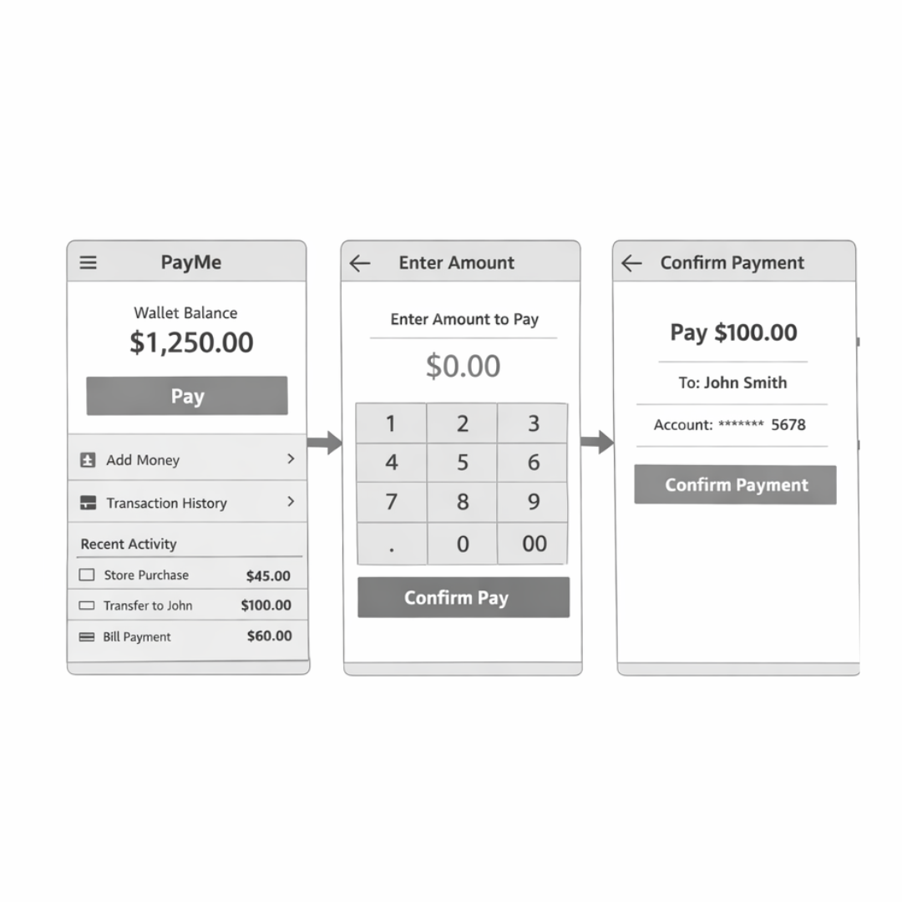
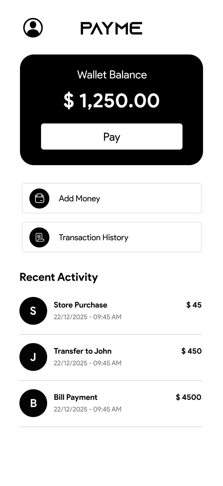
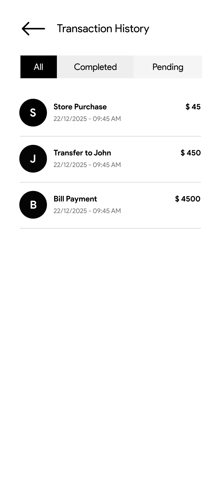

← Back to Work

BidChit.
Bid Chitu: Simple Community Savings — Modernizing traditional trust-based financial systems.
Bid Chitu: Simple Community Savings — Modernizing traditional trust-based financial systems.
BidChit is a digital platform that modernizes traditional community chit funds using an auction ticket model, making savings transparent, secure, and easy to manage online.
Join savings groups with verified members and organizers.
Participate in monthly auctions with instant feedback and logic.
Track every contribution and payout in a shared, immutable history.

I focused on prioritizing the "Auction" status and ensuring the bid interface was the most visible element. Simplified the flow from 7 steps to 4.

